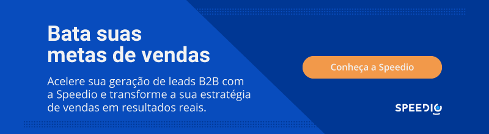

Artigos da Categoria
CSAT o que é? Descubra como medir a satisfação dos seus clientes com esse método
Ao longo do processo comercial, entender e melhorar a satisfação do cliente é fundamental para o sucesso de qualquer negócio. No entanto, fazer isso de forma eficaz é essencial para ter as ferramentas certas à disposição. Uma dessas ferramentas é o CSAT, uma métrica valiosa que oferecer insights fundamentais sobre o nível de satisfação dos clientes.
Neste artigo, vamos explorar um pouco mais a fundo o que é essa métrica, como ela funciona e como é possível utilizá-la para medir e elevar a satisfação do cliente. Afinal, é por meio da opinião do consumidor que a empresa pode focar em problemas estruturais.

Neste post você verá
O que é CSAT?
Afinal, o que é CSAT? Essa sigla significa Índice de Satisfação do Cliente. É uma métrica comum usada pelas empresas para avaliar a satisfação do consumidor com os produtos ou serviços que fornecem.
O CSAT é normalmente medido por pesquisas de satisfação nas quais os consumidores são solicitados a avaliar seu nível de satisfação em uma escala específica, geralmente de 1 a 5 ou de 1 a 10.
Essa métrica é uma ferramenta valiosa para as empresas analisarem o desempenho e encontrarem áreas de melhoria em seus produtos ou serviços, aumentando assim a fidelidade do cliente e mantendo uma forte reputação de marca.
Por que realizar o CSAT da sua empresa?
Existem muitos motivos para que o CSAT seja realizado em sua empresa. Dentre os principais motivos, não podemos deixar de mencionar:
- Medição da satisfação do cliente: o CSAT permite medir imediatamente a satisfação do cliente com seus produtos ou serviços. Isso permite determinar se as expectativas do cliente estão sendo atendidas e onde podem surgir lacunas na entrega.
- Identificação de áreas de melhoria: a análise das descobertas permite identificar áreas específicas onde os clientes estão insatisfeitos. Isso fornece insights significativos para melhorar produtos, serviços, operações ou a experiência do usuário.
- Aumento da fidelidade do cliente: os clientes qualificados que estão satisfeitos com sua marca estão mais inclinados a comprar seus itens ou utilizar seus serviços novamente. Monitorar e aumentar constantemente pode ajudar a fidelizar o consumidor ao longo do tempo.
- Retenção de clientes: os clientes que estão insatisfeitos com sua empresa estão mais inclinados a procurar outro lugar. Ao garantir altos níveis de satisfação do cliente, você reduz a probabilidade de rotatividade de clientes e aumenta a retenção a longo prazo.
- Melhoria da reputação da marca: uma reputação positiva entre os clientes é fundamental para o sucesso de qualquer negócio. Manter elevados padrões de satisfação do cliente e reagir de forma eficaz às questões dos clientes ajuda a desenvolver a reputação da sua marca e a criar uma imagem positiva no mercado.
- Diferenciação competitiva: em um mercado saturado, a satisfação do consumidor pode ser uma diferenciação competitiva fundamental. As empresas que prosperam em fornecer experiências excepcionais aos clientes frequentemente obtêm uma vantagem sobre a concorrência.
- Feedback para inovação: o feedback do cliente, expresso pelo CSAT, pode fornecer insights significativos sobre a inovação de produtos ou serviços. Esses dados podem ajudar a orientar a criação de novos produtos ou alterações nos existentes.
Como melhorar o CSAT com o sistema de CRM?
Para que haja uma implementação assertiva de uma boa estratégia de vendas, é importante integrar o sistema de CRM com uma estratégia eficaz de CSAT na sua empresa. Confira, abaixo, algumas maneiras de realizar essa junção.
Centralização de dados do cliente com CSAT e CRM
Um sistema CRM ajuda você a coletar todas as informações essenciais do cliente em um único local. Isso inclui compras anteriores, interações anteriores, preferências e quaisquer questões ou preocupações levantadas. O fácil acesso a essas informações permite uma abordagem mais personalizada e eficiente ao suporte ao cliente.
Melhor compreensão do cliente
O CRM permite examinar os dados do cliente para entender melhor suas necessidades, comportamentos e preferências. Isto permite-lhe personalizar as suas ofertas e mensagens de acordo com as expectativas específicas de cada cliente, conduzindo potencialmente a uma maior satisfação.
Gestão eficaz de relacionamento com o cliente
Um sistema CRM pode automatizar uma variedade de tarefas de relacionamento com o cliente, incluindo o envio de e-mails personalizados e o rastreamento de interações. Isso garante que nenhum cliente seja esquecido e que todas as dúvidas sejam tratadas com rapidez e eficiência, resultando em uma ótima experiência para o cliente.
Antecipação de necessidades
A análise dos dados do cliente no CRM permite descobrir tendências e padrões que ajudam a prever os desejos do cliente ao longo do processo de vendas. Isso permite que você esteja um passo à frente, fornecendo respostas antes que os clientes as solicitem, o que pode aumentar drasticamente a satisfação do cliente.
Resolução proativa de problemas
Por meio da adoção de um sistema de CRM, aliado ao CSAT, é possível configurar alertas para detectar problemas potenciais ou insatisfação do cliente. Isso permite que você resolva problemas antes que eles se tornem maiores, demonstrando proatividade e compromisso com o serviço ao cliente de qualidade.
CSAT: como calcular?
Dentro de uma sólida estratégia comercial, o CSAT deve ser calculado com base nas respostas de uma pesquisa de satisfação do cliente. Na maioria das vezes, as respostas são classificadas em uma escala numérica. Observe, abaixo, a maneira mais simples de calcular o CSAT.
- Coleta de respostas: após realizar uma pesquisa de satisfação do cliente, totalize as respostas obtidas.
- Soma das classificações: some todas as avaliações dos clientes. Por exemplo, se você usar uma escala de 1 a 5 e tiver 100 respostas, some todas as avaliações de 1 a 5.
- Cálculo total possível: determine o número total de pontos possíveis. Isto é obtido multiplicando o número total de respostas pelo valor máximo da escala de classificação. Por exemplo, se tiver 100 respostas numa escala de 1 a 5, o número total de pontos disponíveis é 100 multiplicado por 5 (valor máximo da escala), o que equivale a 500.
Como implementar o CSAT?
Implementar o CSAT dentro do ciclo de vendas envolve algumas etapas indispensáveis que garantem que a métrica seja eficaz e forneça os insights mais valiosos acerca da satisfação do cliente. Confira, abaixo, o que não pode faltar:
- Escolha a metodologia de coleta de dados: determine como você coletará as respostas CSAT. Isso pode ser conseguido por meio de pesquisas de satisfação por e-mail, questionários on-line e avaliações das interações de atendimento ao cliente, entre outras possibilidades. Selecione a opção mais conveniente e adequada ao seu público-alvo.
- Desenvolva as perguntas de pesquisa: crie perguntas claras e explícitas para avaliar a satisfação do consumidor com os itens ou serviços prestados. As perguntas devem ser escritas de uma forma que permita respostas quantificáveis, como uma escala de 1 a 5 ou de 1 a 10.
- Determine a frequência da pesquisa: decida com que frequência você enviará pesquisas. Isso varia de acordo com o seu ciclo de negócios e com que frequência os clientes interagem com sua empresa. Por exemplo, as pesquisas podem ser enviadas após cada transação ou em intervalos regulares, como trimestralmente.
- Analise os resultados: depois de coletar os dados, examine as pontuações do CSAT para determinar padrões, tendências e oportunidades de desenvolvimento. Preste muita atenção ao feedback negativo e às áreas onde a satisfação do consumidor é baixa.
CSAT: exemplo de modelo de questionário
Confira, abaixo, um exemplo de modelo de questionário para medir o CSAT:
Sobre o produto/serviço
Como você classificaria sua satisfação geral com o produto/serviço que recebeu?
- Muito insatisfeito
- Insatisfeito
- Neutro
- Satisfeito
- Muito satisfeito
Qualidade
Como você classificaria a qualidade do produto/serviço que recebeu?
- Muito baixa
- Baixa
- Aceitável
- Alta
- Muito alta
Atendimento ao cliente
Como você classificaria o atendimento ao cliente que recebeu?
- Muito insatisfatório
- Insatisfatório
- Neutro
- Satisfatório
- Muito satisfatório
Tempo de resposta
Como você classificaria o tempo de resposta para suas consultas ou solicitações?
- Muito lento
- Lento
- Aceitável
- Rápido
- Muito rápido
Probabilidade de recomendação
Com base na sua experiência, qual é a probabilidade de você recomendar nosso produto/serviço a um amigo ou colega?
- Muito improvável
- Improvável
- Neutro
- Provável
- Muito provável
Como melhorar o CSAT?
Para melhorar o CSAT é necessário aplicar um esforço contínuo e sistemático, a fim de sanar a dor do cliente e elevar a sua satisfação em relação aos produtos e serviços. As estratégias que visam melhorar a métrica são:
- Entender as expectativas do cliente: realize pesquisas e análises de mercado para entender melhor as necessidades e expectativas do cliente. Quanto mais você entender seus consumidores, mais adequado você estará para agradá-los.
- Focar no atendimento ao cliente: prepare sua equipe para oferecer um excelente atendimento ao cliente. Isso envolve ser cortês, prestativo, receptivo e capaz de resolver dificuldades de maneira eficaz.
- Personalizar a experiência do cliente: use dados e insights para personalizar a experiência do consumidor sempre que possível. Forneça recomendações individualizadas, mensagens direcionadas e soluções baseadas nas necessidades individuais do consumidor.
- Resolver problemas rapidamente: prepare-se para responder às questões ou reclamações dos consumidores de forma rápida e eficaz. Uma resolução rápida e satisfatória pode transformar uma experiência negativa em positiva, aumentando a fidelização do cliente.
Quais as diferenças entre NPS, CES e CSAT?
O NPS é responsável por medir a disposição do cliente em recomendar a sua empresa para outras pessoas. Esses clientes utilizam uma escala de recomendação de 0 a 10. Além disso, os consumidores também são divididos em promotores, neutros e detratores.
O CSAT, por sua vez, mede a satisfação geral dos clientes com um produto ou serviço específico. Os clientes são solicitados a classificar sua satisfação em uma escala de 1 a 5 ou de 0 a 10.
Por fim, o CES mede o esforço que os clientes precisam fazer para interagir com sua empresa e obter o suporte ou resolver problemas. Os clientes são solicitados a classificar o nível de esforço necessário em uma escala de fácil a difícil.

O CSAT (Customer Satisfaction Score) é mais do que apenas uma métrica de negócios: é uma ferramenta poderosa para entender, medir e elevar a satisfação do cliente. Quando a métrica é aplicada à proposta comercial, a empresa investe no sucesso a longo prazo da organização, pois os clientes satisfeitos tendem a permanecer fiéis à marca.